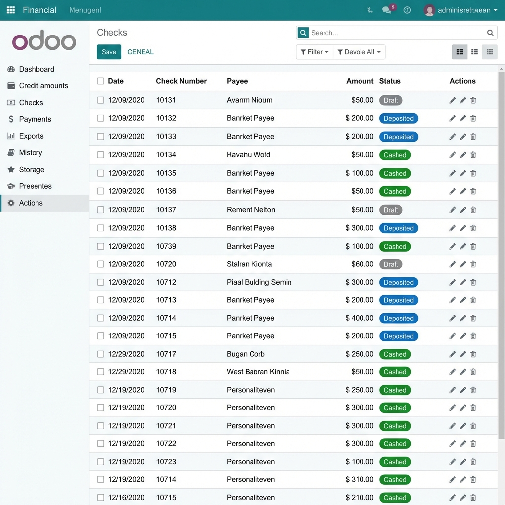

MS Management Cheque
Complete lifecycle management for Incoming & Outgoing cheques.
Odoo 18.0
Arabic & English
Auto-Accounting
Complete lifecycle management for Incoming & Outgoing cheques.

MS Management Cheque provides a robust framework to track and manage cheque cycles. From registration to clearance, every step is automated with corresponding journal entries.

يوفر نظام "إدارة الشيكات MS" إطاراً قوياً لتتبع وإدارة دورة حياة الشيكات. من التسجيل وحتى التحصيل، تتم أتمتة كل خطوة مع القيود المحاسبية المقابلة لها.
Journal entries are automatically created for each state change (Submission, Deposit, Cash), keeping your accounts perfectly balanced without manual intervention.
يتم إنشاء قيود اليومية تلقائياً لكل تغيير في الحالة (تقديم، إيداع، تحصيل)، مما يحافظ على توازن حساباتك تماماً دون تدخل يدوي.
Easily handle cheque returns or cancellations. The module supports full reversal of journal entries with a single click, maintaining audit integrity.
تعامل بسهولة مع مرتجعات الشيكات أو الإلغاءات. يدعم الموديول عكس قيود اليومية بالكامل بنقرة واحدة، مع الحفاظ على سلامة التدقيق.
Get professional support and custom feature development.
احصل على دعم احترافي وتطوير ميزات مخصصة.
Contact Mohamed Saied